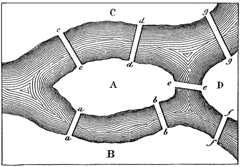

Voici quelques problèmes modélisables par un graphe. Nous allons voir dans cette section les algorithmes de résolution à partir de graphe.
La ville de Königsberg (aujourd’hui Kaliningrad en Russie) se situe sur la rivière Pregolia et comporte deux îles. Sept ponts relient les îles entre elles ou aux rives, comme sur la figure ci-dessous.

Les habitants se posaient la question de savoir s’il existait une promenade permettant de passer une et une seule fois sur chaque pont pour revenir au point de départ.
Quelle réponse auriez-vous donner aux habitants de Königsberg ?
La modélisation de ce problème (graphe ci-dessous) a l’intérêt de se généraliser.
Recherche de cycle
Pour que l’on puisse faire une promenade ramenant le promeneur au point de départ, il faudrait que le nombre de ponts pour chaque île et chaque rive soit pair.
Ils nous serviront souvent en tant que procédures de base pour d'autres algorithmes.